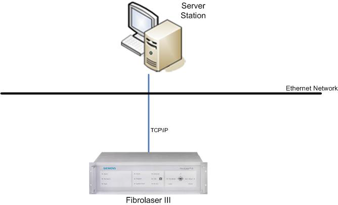
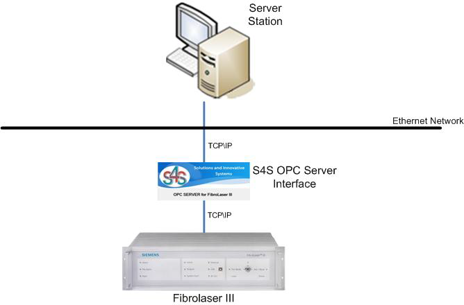

Fibrolaser III System Architectures
The following describes the different Fibrolaser III system architectures.
Fibrolaser III Architecture in Modbus Integration
In the Modbus integration, the Modbus TCP protocol does not use any additional communication\converter devices between the management station and the control panel since the Fibrolaser panel natively implements the Modbus TCP protocol.

Fibrolaser III Architecture in OPC Integration
In the OPC integration, a specific OPC DA Server provided by S4S is used. The OPC Server communicates with the Fibrolaser control panel using the LON protocol.
